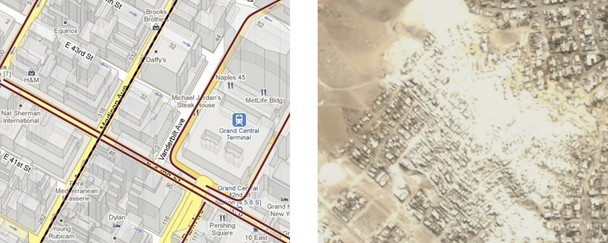

Present-day users of web-based mapping products such as Google Maps are presented with an extremely rich cartographic landscape when they view maps of first-world urban centers such as New York and San Francisco. Real-time traffic data is often overlaid in lines of shifting red and green, and many buildings appear in orthographic '3D'. Well-known restaurants are interspersed with subway stops whose schedules may be called up with a few clicks. Routing algorithms offer turn-by-turn directions, optimized for pedestrians, bicyclists, and motorists.
|

|
Many are surprised when they view places such as Lima, Peru, a metropolis of 11 million people, and find that not far from the city center are vast areas of indistinct and unlabelled buildings. While some of these are recognized and official parts of the Municipality of Lima, many are informal settlements, whose inhabitants lack title to their plots of land, and whose streets and buildings do not appear on any city map. Many of these settlements, or `invasions' as they are known to Peruvians, are governed by leaders who are either elected by the several hundred inhabitants, or who maintain control through intimidation -- employing thugs to collect taxes and enforce rules.
This state of extralegal urban sprawl exists in many parts of the world, and according to UN-HABITAT, up to a quarter of the world's population lives in similar conditions.4.1 A legal process may exist to establish official land ownership in these settlements, and to issue deeds to their inhabitants (as it does in Peru), but in many cases the state lacks the resources to quantify or map these areas:
(Quotation on `lack the means to ...' -- UN-HABITAT)
While accessible and participatory map-making is by no means a solution to this problem, many of the negotiations occurring in such areas are taking place in the language of cartography -- whether intentional or not, cartographic invisibility is often the first step to settlements' exclusion from planning processes:
...slums - all variety of precarious settlements - represent the `invisible' city, often omitted from official maps and documents and frequently physically hidden by local authorities by colorful walls and fences. -- `Slums of the World', UN-HABITAT, 2003
(Map of highway over a slum, Jai Sen, blank map of favelas in Rio chosen as Olympic sites, Kate Balug)
`geographical mapping techniques to support struggles for social justice in India'. The end result, it added, could make maps as `tools to fight injustice in society'. -- http://timeoutbengaluru.net/aroundtown/aroundtown_feature_details.asp?code=59
The Grassroots Mapping project was conceived as a means to broaden access to mapping technology, and was developed in direct response to the need for maps in informal settlements on the outskirts of Lima, Peru.
PGIS researchers have also established a strong case for the diverse uses of participatory maps. Robert Chambers lists several, ranging from benefits to outside aid organizations to direct benefits to the local community, including:
[11]